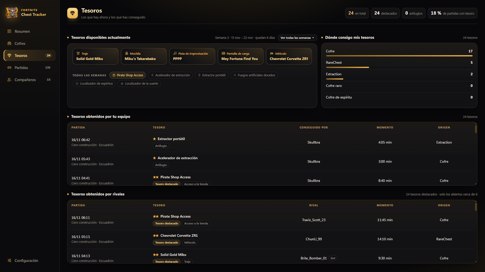
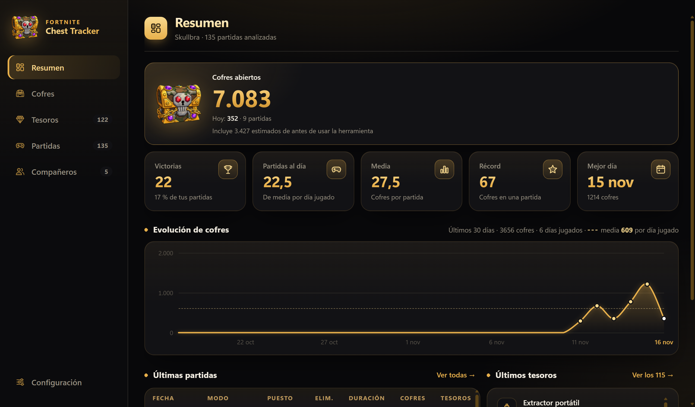
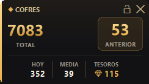

Sabe cuántos cofres llevas y
qué tesoros abren tus rivales
¿Buscando el Token Pirata o los cosméticos semanales? FCT cuenta tus cofres en vivo mientras juegas, estima tu historial de la temporada sin empezar de cero y te revela qué premios sacaron tus oponentes en tu cara.

Todo lo que Fortnite no te cuenta
Tesoros y Token Pirata
Lleva el seguimiento de los cosméticos semanales que vas desbloqueando y descubre de inmediato si has obtenido el cotizado Acceso a la Tienda Pirata.

Estimación: No empiezas de cero
Al instalar la app, FCT analiza tus partidas guardadas y tus estadísticas para calcular cuántos cientos de cofres llevas abiertos en toda la temporada actual.

Piques en Escuadrón
Descubre quién lootea más en tu grupo. FCT desglosa los cofres abiertos por cada compañero de tu squad en cada una de vuestras partidas juntos.

¿Quién se llevó el tesoro en tu lobby? Ahora lo sabes.
En el evento Cazadores de Tesoros, los cofres tienen una probabilidad de soltar premios para todo el escuadrón. Al acabar tu partida, FCT te muestra qué rivales abrieron cofres destacados en tus inmediaciones.
Overlay en Pantalla para OBS y tu Juego
Se activa solo cuando Fortnite está abierto. Puedes moverlo con el ratón a la esquina que prefieras, fijarlo encima del juego o capturarlo como fuente independiente en OBS Studio.

Preguntas Frecuentes
FCT.exe). Lo descargas, haces doble clic y ya está funcionando. No añade servicios raros ni deja basura en el sistema.
Empieza a contar tus cofres hoy
Descarga la app en un segundo, calcula cuánto llevas farmeado y no vuelvas a preguntarte qué tesoro se llevaron en tu partida.